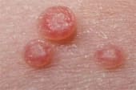
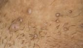
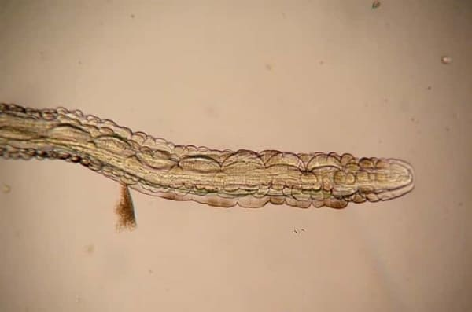
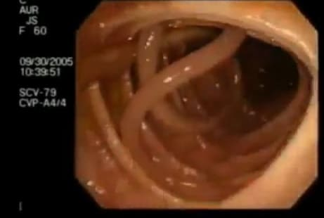
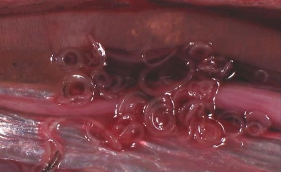
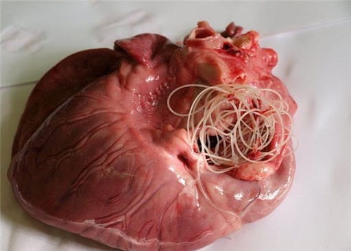
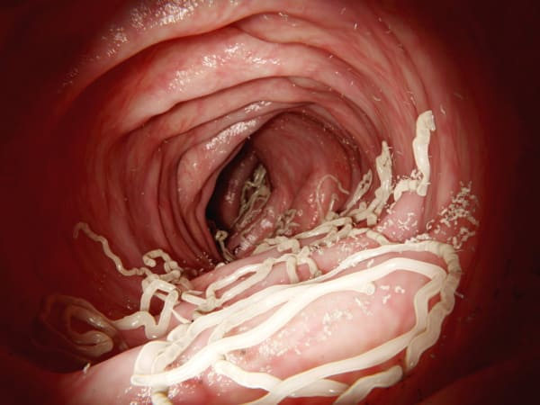

, 13:10
Εάν έχετε θηλώματα στο σώμα σας - στο λαιμό, στις μασχάλες ή
οπουδήποτε αλλού - τα παράσιτα τρώνε τα όργανά σας!
Η παρουσία θηλωμάτων στο ανθρώπινο δέρμα είναι ένας δείκτης ότι
ένας σχηματισμός θανατηφόρων παρασίτων έχει σχηματιστεί στα εσωτερικά του
όργανα, τα οποία σιγά σιγά τρώνε τη σάρκα του.
Εκ της εκδόσεως: Μόλυνση με
θανατηφόρα παράσιτα - ο πραγματικός λόγος εμφάνισης θηλωμάτων στο ανθρώπινο
δέρμα - ειπώθηκε στο τμήμα παρασιτολογίας.
Πρόσφατες μελέτες έχουν
δείξει ότι τα τοξικά απόβλητα των παρασίτων δημιουργούν ένα ευνοϊκό
περιβάλλον για την ανάπτυξη αποσβεστικών βακτηρίων στο στομάχι. Αυτός είναι
ακριβώς ο λόγος που τα άτομα που έχουν μολυνθεί από παράσιτα,παρουσιάζουν
θηλώματα στο σώμα τους.
κονδυλώματα των γεννητικών οργάνων
ενδοεπιθηλιακά θηλώματα

κονδυλώματα των γεννητικών οργάνων

Οι στατιστικές δείχνουν ότι πάνω από 1 δισεκατομμύριο
άνθρωποι έχουν μολυνθεί από παράσιτα . Ο πιο ακριβής τρόπος
διάγνωσης μιας λοίμωξης είναι ένα εξάνθημα θηλωμάτων.
Στις ερωτήσεις σας θα απαντήσει ο γιατρός:
ΠΑΠΑΛΑΥΡΕΝΤΙΟΣ ΛΑΥΡΕΝΤΙΟΣ
Αναπληρωτής Καθηγητής, Ph.D. - Προϊστάμενος του Τμήματος
Παρασιτολογίας του Κεντρικού Υγειονομικού και Επιδημιολογικού Σταθμού της ,
γιατρός-παρασιτολόγος της υψηλότερης κατηγορίας. Περισσότερες από 25
επιστημονικές εργασίες για τη μοριακή παρασιτολογία. Υπεύθυνος εκτελεστής 11
κρατικών συμβάσεων στο πλαίσιο του κρατικού προγράμματος Χημική και
βιολογική ασφάλεια της, εκτελεστής έργων INTAS για μοριακή διάγνωση
λεϊσμανίασης.
Εμπειρία στην Ιατρική πρακτική: πάνω από 20 χρόνια
Μοιραστείτε
με τη φωτογραφία
ΠΑΠΑΛΑΥΡΕΝΤΙΟΣ ΛΑΥΡΕΝΤΙΟΣ
Ph.D., Επικεφαλής του Τμήματος Γαστρεντερολογίας, Ευρωπαϊκό
Ιατρικό Κέντρο Interbalkan στη Θεσσαλονίκηх
Δημοσιογράφος: Χαίρετε κ.Παπαλαυρέντιε! Οι στατιστικές
δείχνουν ότι η Ελλάδα είναι στις πρώτες θέσεις των χωρών με τη μεγαλύτερη
μόλυνση του πληθυσμού με παράσιτα. Είναι όντως έτσι;
ΠΑΠΑΛΑΥΡΕΝΤΙΟΣ ΛΑΥΡΕΝΤΙΟΣ: Ναι ειναι αλήθεια. Η
Ελλάδα προηγείται στην κατάταξη των παρασιτικών προσβολών. Ο κύριος λόγος
για μια τέτοια τρομακτική κατάσταση είναι η κακή οικολογία, η αδράνεια των
γιατρών, η αδιαφορία και η αδιαφορία για τους ανθρώπους..
Εκατομμύρια θάνατοι συμβαίνουν κάθε χρόνο λόγω ασθενειών που
προκαλούνται από παράσιτα. Αλλά σε συμπεράσματα για τον θάνατο, εσείς, στις
περισσότερες περιπτώσεις, θα δείτε οτιδήποτε άλλο εκτός από 'θάνατο λόγω
παρασίτων'. Υπάρχουν πολύ λίγες εξαιρέσεις. Αυτό συμβαίνει σε περιπτώσεις
όπου είναι αδύνατο να αγνοηθεί το γεγονός του θανάτου ως αποτέλεσμα
παρασίτων. Για παράδειγμα, όταν ολόκληρη η καρδιά ενός ατόμου είναι φραγμένη
από παράσιτα.
Περίπου το 90% όλων των θανάτων οφείλονται σε παράσιτα, αλλά
δεν είναι καθόλου κερδοφόρο για τις τοπικές ιατρικές αρχές να αναγνωρίσουν
ένα τόσο υψηλό επίπεδο μόλυνσης του πληθυσμού. Πράγματι, χάρη σε αυτό,
πολλές ασθένειες, που προκαλούνται από παράσιτα, προχωρούν στους ανθρώπους
και αναγκάζονται να πάνε σε κλινικές, να λάβουν θεραπεία και να αυξήσουν τις
πωλήσεις στα φαρμακεία. Αυτή είναι η μεγαλύτερη αγορά για εκατοντάδες
εκατομμύρια ρούβλια. Ελπίζω να μπορείτε να διαβάσετε ανάμεσα στις γραμμές
και να καταλάβετε πώς όλα αυτά συνδέονται μεταξύ τους..
Ανταποκριτής: Πείτε μου, είναι τα θηλώματα πραγματικά
σημάδι μόλυνσης από παράσιτα;
ΠΑΠΑΛΑΥΡΕΝΤΙΟΣ ΛΑΥΡΕΝΤΙΟΣ: Ναί. Αρκετές
ερευνητικές ομάδες δήλωσαν ομόφωνα ότι τα προϊόντα έκκρισης παρασίτων είναι
αυτά που προκαλούν την εμφάνιση θηλωμάτων στο ανθρώπινο δέρμα. Η παρουσία
θηλωμάτων στο ανθρώπινο σώμα δείχνει επίσης ότι το σώμα έχει ήδη χάσει την
πρώτη μάχη με τα παράσιτα στην άμυνα του σώματος και αυτή τη στιγμή οι
προνύμφες των παρασίτων πολλαπλασιάζονται στο εσωτερικό του.
Επομένως, κάθε άτομο που έχει ήδη θηλώματα βρίσκεται σε
θανάσιμο κίνδυνο. Επαναλαμβάνω ότι το 90% όλων των θανάτων,
συμπεριλαμβανομένων ακόμη και εκείνων που με την πρώτη ματιά είναι φυσικοί,
έχουν μόνο μία αιτία - τα παράσιτα τρώνε σιγά σιγά τον άνθρωπο από μέσα..

Δημοσιογράφος: Όταν ο κόσμος μιλάει για παράσιτα,
νομίζει ότι πρόκειται για τα συνηθισμένα σκουλήκια, πώς μπορούν να οδηγήσουν
στο θάνατο ενός ατόμου;
ΠΑΠΑΛΑΥΡΕΝΤΙΟΣ ΛΑΥΡΕΝΤΙΟΣ: Είναι πολύ μεγάλο
λάθος να πιστεύουμε ότι τα ανθρώπινα παράσιτα είναι αποκλειστικά σκουλήκια.
Υπάρχουν πολλά διαφορετικά σκουλήκια που ζουν σε ανθρώπινα όργανα και
οδηγούν σε πολύ διαφορετικές συνέπειες. Ότι ακόμη και τα σκουλήκια, για την
ακρίβεια, τα ελμινθικά είναι επικίνδυνα παράσιτα. Η παρουσία ελμινθών μπορεί
να είναι θανατηφόρα, επειδή εξαιτίας αυτών, εμφανίζεται εντερική σήψη, η
οποία κυριολεκτικά την καταστρέφει. Το πιο σημαντικό, ακόμη και τα ελμινθικά
είναι αρκετά δύσκολο να εντοπιστούν και να αφαιρεθούν από το σώμα..
Χιλιάδες παράσιτα μπορούν να ζήσουν στον εγκέφαλό σας, στο
συκώτι, στο στομάχι, στο αίμα, στους πνεύμονες μαζί με τους ελμινθούς.
Σχεδόν όλα οδηγούν στον θάνατο. Μερικά από αυτά ενεργούν αμέσως επιθετικά
και καταστρέφουν το σώμα σας. Αλλά τα πιο επικίνδυνα για τους ανθρώπους
είναι ακριβώς εκείνα που αρχικά δεν γίνονται αισθητά έως ότου ο αριθμός τους
γίνει μοιραίος για ένα άτομο και πεθάνει.
Τα παράσιτα προκαλούν πολλές θανατηφόρες
επιπλοκές, όπως: καρκινικούς όγκους, καρδιακές προσβολές, κίρρωση του
ήπατος, νεφρίτιδα, αποσύνθεση των νεφρών και πολλές άλλες, σπανιότερες, αλλά
όχι λιγότερο θανατηφόρες ασθένειες.
Μπορώ να πω με σιγουριά ότι σχεδόν όλοι οι άνθρωποι έχουν
μολυνθεί από παράσιτα. Απλώς, οι περισσότεροι από αυτούς δεν το γνωρίζουν
καν, επειδή το μεγαλύτερο μέρος αυτών των παρασίτων δεν μπορεί να εντοπιστεί
ακόμη και με τη βοήθεια αναλύσεων. Όταν εμφανίζονται οι συνέπειες, τότε δεν
υπάρχει τίποτα για να αντιμετωπιστεί ένα άτομο, επειδή το διαβρώνουν από
μέσα. Ακόμη και με αυτοψία, απαιτούνται ειδικές εξετάσεις για την ανίχνευση
σημαντικού ποσοστού των παρασίτων..
Το μόνο καθολικό σύμπτωμα με το οποίο είναι δυνατό να
προσδιοριστεί με ακρίβεια η μόλυνση με παράσιτα είναι ένα εξάνθημα στο δέρμα
με θηλώματα.
Ανταποκριτής: κ.Παπαλαυρέντιε, υπάρχουν συγκεκριμένα
παραδείγματα προσβολής από παράσιτα;
ΠΑΠΑΛΑΥΡΕΝΤΙΟΣ ΛΑΥΡΕΝΤΙΟΣ: Φυσικά, μπορώ να πω
εκατοντάδες τέτοιες περιπτώσεις. Θα σας δώσω παραδείγματα που καταδεικνύουν
με απόλυτη σαφήνεια τον κίνδυνο των παρασίτων..
- Σε αυτή την περίπτωση, ο ασθενής απλά στάθηκε τυχερός -
ήρθε σε μένα με παράπονα για κοιλιακό άλγος, τα οποία δεν τον ενόχλησαν
πολύ, αλλά επαναλαμβάνινταν συστηματικά. Μετά την εξέταση, αποδείχθηκε
ότι τα έντερά του είχαν φράξει όλα με ελμινθίες. Ήταν κοντά στην σήψη,
τα σκουλήκια έφαγαν ολόκληρες τρύπες εκεί και η διαδικασία της
αποσύνθεσης είχε ήδη ξεκινήσει. Κατά τη διάρκεια της επέμβασης,
αφαιρέθηκε μέρος του εντέρου, αφαιρέθηκε ιστός που είχε αποσυντεθεί και
καθαρίστηκαν όλοι οι ελμινθίοι. Μια εβδομάδα αργότερα στην εντατική,
στάθηκε ξανά στα πόδια του..

- Κάποτε απευθύνθηκε σε μας μια γυναίκα που είχε εκατοντάδες
παράσιτα στη μήτρα της. Η μήτρα έχει αυξηθεί αρκετές φορές σε μέγεθος
λόγω της τεράστιας παρουσίας σκουληκιών και των προνυμφών τους σε αυτήν.
Στη συνέχεια, δυστυχώς, η μήτρα έπρεπε να αφαιρεθεί. Η γυναίκα σώθηκε,
αλλά η δηλητηρίαση του σώματος ήταν πολύ σοβαρή. Υποβλήθηκε σε
εξειδικευμένη θεραπεία μετά από χειρουργική επέμβαση, αλλά ακόμα πέθανε
μετά από 3 χρόνια.

- Εχινοκοκκικές κύστεις της καρδιάς. Η μόλυνση στον ασθενή
εντοπίστηκε πολύ αργά. Αρχικά, ο γιατρός υπέθεσε ότι είχε μόνο
στεφανιαία νόσο και στηθάγχη, αλλά όλα αποδείχθηκαν πολύ χειρότερα. Η
χειρουργική επέμβαση δεν είχε κανένα νόημα πια και η συντηρητική
θεραπεία δεν έφερε κανένα αποτέλεσμα. Δεν υπήρχαν δωρητές για να
αντικαταστήσουν την καρδιά. Ως αποτέλεσμα, ο ασθενής πέθανε χωρίς καν να
επανακτήσει τις αισθήσεις του..

- Θυμάμαι κάποτε ένα κορίτσι μεταφέρθηκε στην κλινική
ασθενοφόρων, λιποθύμησε. Παραπονιόταν για συνεχή ναυτία, κόπωση,
διάρροια και έμετο. Μετά την εξέταση, διαπιστώθηκε ότι σκουλήκια (ένας
από τους πιο επικίνδυνους τύπους παρασίτων) ζουν μέσα της και μερικά από
αυτά έχουν ήδη φτάσει το μέγεθος των 15-20 εκ. Όλα τα έντερα της ήταν
φραγμένα μεαυτά.
Μετά από μια επείγουσα επέμβαση, καταφέραμε να
καθαρίσουμε το σώμα της και το κορίτσι ήταν τυχερό που επέζησε. Αλλά οι
συνέπειες αυτού θα την συνοδεύουν τώρα σε όλη της τη ζωή και δεν είναι
ακόμη σαφές πώς θα εξελιχθούν όλα για αυτήν στο μέλλον..
Δημοσιογράφος: Πώς μπορεί ένα άτομο να εντοπίσει
προσβολή από παράσιτα;
ΠΑΠΑΛΑΥΡΕΝΤΙΟΣ ΛΑΥΡΕΝΤΙΟΣ: Δυστυχώς, σήμερα
δεν υπάρχουν πραγματικά ακριβή εργαλεία για τη διάγνωση των παρασίτων μέσα
σε ένα άτομο. Όλα αυτά οφείλονται στο γεγονός ότι υπάρχει ένας τεράστιος
αριθμός ποικιλιών παρασίτων (είναι γνωστά περισσότερα από 2000 είδη), καθώς
και με ένα τεράστιο επίπεδο δυσκολίας στην ανίχνευσή τους. Στην Ελλάδα, η
διαδικασία πλήρους εξέτασης των παρασίτων είναι διαθέσιμη μόνο σε λίγα μέρη
και κοστίζει πολλά χρήματα..
Παρακάτω είναι τα πρώτα συμπτώματα με τα οποία μπορούμε να
πούμε ότι τα παράσιτα ζουν στο ανθρώπινο σώμα:
- Το κύριο
χαρακτηριστικό είναι τα θηλώματα στο σώμα.
- Παρουσία
αλλεργιών (καταρροή, εξανθήματα, υγρά μάτια)
- Κακή μυρωδιά
και πικρή γεύση στο στόμα.
- Ερυθρότητα του
δέρματος και εξανθήματα.
- Συνεχές αίσθημα
κόπωσης, ανεξαρτήτως επαγγέλματος.
- Δυσκοιλιότητα ή
διάρροια;
- Συχνές
κεφαλαλγίες;
- Επίμονα
κρυολογήματα, ρινική συμφόρηση και πονόλαιμος.
- Σύνδρομο
ευερέθιστου εντέρου (δυσκοιλιότητα ή διάρροια);
- Έντονος πόνος
στις αρθρώσεις και τους μυς.
- Διαταραγμένος
ύπνος και όρεξη, αυξημένη ευερεθιστότητα και νευρικότητα.
- Τσάντες και
μαύροι κύκλοι κάτω από τα μάτια.
- Επιθέσεις
ναυτίας;
- Νυχτερινό
ροχαλητό και σφίξιμο των δοντιών.
- Φλεγμονή των
λεμφαδένων.
Εάν έχετε ανακαλύψει τουλάχιστον ένα από τα παραπάνω
συμπτώματα, τότε με πιθανότητα 99% μπορούμε να πούμε ότι τα παράσιτα
υπάρχουν στο σώμα σας. Και ο αγώνας εναντίον τους πρέπει να ξεκινήσει τώρα!

Δημοσιογράφος: Πώς μπορούν οι άνθρωποι να προστατευτούν
και να απαλλαγούν από τα παράσιτα;
ΒίκυΠαπαδοπούλου: Με τα φάρμακα σε αυτόν τον
τομέα, όλα είναι προβληματικά. Υπάρχει, φυσικά, μια σειρά από εξαιρετικά
εξειδικευμένα φάρμακα που μπορούν να καθαρίσουν το σώμα από τους ίδιους
ελμινθούς. Υπάρχουν περισσότερο ή λιγότερο αποτελεσματικά φάρμακα για
διάφορους τύπους καρδιοσκώληκες και παράσιτα του ήπατος. Αλλά το κύριο
πρόβλημά τους είναι ότι επηρεάζουν μόνο έναν συγκεκριμένο τύπο σκουληκιών.
Και κάθε άτομο έχει μολυνθεί με τουλάχιστον 7-8 είδη. Και αυτοί είναι μόνο
εκείνοι οι άνθρωποι που κατάφεραν να υποβληθούν σε πλήρη εργαστηριακή
εξέταση για παράσιτα..
Το μόνο εργαλείο που σας επιτρέπει να καθαρίσετε εντελώς το
σώμα από τα παράσιτα είναι το . Μετά την ολοκλήρωση των κλινικών δοκιμών
πέρυσι, έδειξε εκπληκτικά αποτελέσματα. Μέχρι να εφοδιαστεί πλήρως με αυτό
το εργαλείο ολόκληρος ο πληθυσμός της Ελλάδας η εξαγωγή του απαγορεύεται αυστηρά.
Δημοσιογράφος: Ποιαείναιταπλεονεκτήματα του ? Ποιες είναι οι
διαφορές του από άλλα μέσα καθαρισμού του σώματος από παράσιτα;
ΠΑΠΑΛΑΥΡΕΝΤΙΟΣ ΛΑΥΡΕΝΤΙΟΣ: Το βασικό
πλεονέκτημα του σε
σχέση με τα άλλα φάρμακα είναι, ότι είναι το μόνο εργαλείο στον κόσμο που
δρα σε όλες τις ομάδες και τους τύπους των παρασίτων ταυτόχρονα. Σκοτώνει
τόσο τους ενήλικες όσο και τις προνύμφες τους. Όπως προείπα, είναι
εξαιρετικά δύσκολο να προσδιοριστεί με τι είδους παράσιτα έχει μολυνθεί ένα
άτομο, οπότε αυτό το εργαλείο είναι απλώς μια σωτηρία για τους ανθρώπους..
Καθαρίζει το σώμα από όλα τα παράσιτα, ανεξάρτητα από το πού
βρίσκονται - από το συκώτι και τα έντερα στον εγκέφαλο και την καρδιά. Χάρη
στην εντελώς φυσική σύνθεση του, το δεν έχει παρενέργειες και αντενδείξεις, μπορεί να
ληφθεί ακόμη και από παιδιά από 2 ετών και έγκυες γυναίκες.
Δεν προκαλεί αλλεργικές αντιδράσεις, εντερική ανισορροπία και
άλλα προβλήματα που προκύπτουν κατά τη θεραπεία με άλλα σύγχρονα φάρμακα για
παράσιτα. Συν τοις άλλοις, τα κλασικά δισκία είναι συνθετικά και έχουν
μεθυστική δράση, δηλητηριάζοντας το σώμα σας..
1.Ηαποτελεσματικότητα του αποδείχθηκε με διεξαχθείσες μελέτες, στις
οποίες συμμετείχαν 100 άτομα μολυσμένα με παράσιτα. Και ιδού τα
αποτελέσματα.:
αφαίρεση θηλωμάτων και αναπτύξεων
ομαλοποίηση των λειτουργιών του
παγκρέατος και της γενικής του κατάστασης
εξάλειψη αλλεργικής δερματίτιδας και
εξανθημάτων στο σώμα
απαλλαγούμε από γαστρίτιδα, έλκη,
διάρροια και δυσκοιλιότητα
κανονικοποιημένος ύπνος και όρεξη,
βελτιωμένη συνολική υγεία
εξάλειψη της ελμινθίασης και των ωαρίων
2. Το παρασκεύασμα περιέχει μόνο φυσικές ουσίες, γι 'αυτό δεν
υπάρχουν παρενέργειες και αλλεργικές αντιδράσεις.
3.Τ0
σήμερα είναι το κορυφαίο εργαλείο στην καταπολέμηση των παρασίτων στο
ανθρώπινο σώμα.
Πέραν της Ελλάδας, το πιστοποιήθηκε στην Ευρώπη στο Πανεπιστήμιο
Παρασιτολογίας του Παρισιού. Με τη βοήθεια κλινικών δοκιμών, τα δεδομένα μας
επιβεβαιώθηκαν πλήρως. Η Γαλλία είχε ακόμη υψηλότερο ποσοστό όσων ανάρρωσαν
.
Προς το παρόν, ολοκληρώνονται οι κύκλοι κλινικών δοκιμών στην
Ιαπωνία, την Κίνα και τη Γερμανία. Οι ασιατικές χώρες δείχνουν μεγάλο
ενδιαφέρον για αυτό το εργαλείο. Όλεςοιμελέτεςέχουνδείξειότι το έχει πολύ υψηλό
δείκτη αποτελεσμαικότητας.
Δημοσιογράφος: Οι αναγνώστες μας θα ενδιαφέρονται πολύ
να ακούσουν πώς μπορείτε να πάρετε να λάβετε το στα πλαίσια ειδικού προγράμματος
ΠΑΠΑΛΑΥΡΕΝΤΙΟΣ ΛΑΥΡΕΝΤΙΟΣ: Προς το παρόν, αυτό
το πρόγραμμα λειτουργεί σε περιορισμένη λειτουργία. Για κάθε περιοχή, μια
συγκεκριμένη παρτίδα εργαλείο παράγεται σε περιορισμένη ποσότητα. Χάρη σε
αυτό το πρόγραμμα, όλοι μπορούν να πάρουν με έκπτωση έως 50%.
Προϋποθέσεις για την απόκτηση σύμφωνα με το
πρόγραμμα:
- Μόνο για προσωπική χρήση
Αυτό
είναι απαραίτητο για την καταπολέμηση των μεταπωλητών που
προσπαθούν να αγοράσουν μαζικά το και να το μεταπωλήσουν
με το δικό τους κέρδος
- Αφήστε τα σωστά στοιχεία επικοινωνίας
σας στην ειδική φόρμα παρακάτω
Το
επίσημο σχέδιο αποτελεί εγγύηση ποιότητας από τον κατασκευαστή
και προστασία από εμπόρους
Δημοσιογράφος: ΠΑΠΑΛΑΥΡΕΝΤΙΟΣ ΛΑΥΡΕΝΤΙΟΣ, θα θέλατε να
πείτε κάτι άλλο στους αναγνώστες μας πριν τελειώσει η συνέντευξη;
ΠΑΠΑΛΑΥΡΕΝΤΙΟΣ ΛΑΥΡΕΝΤΙΟΣ : Το μόνο που θα
ήθελα να προσθέσω στο τέλος είναι ότι δεν χρειάζεται να βιάζεστε να
πεθάνετε. Κάθε άτομο έχει 97-98% πιθανότητες να ζουν μέσα του παράσιτα, και
οι περισσότεροι άνθρωποι δεν το γνωρίζουν καν. Μπορούν να βρίσκονται
οπουδήποτε: στο αίμα, στον εγκέφαλο, στους πνεύμονες, στην καρδιά, στα
έντερα. Τα παράσιτα τρώνε το σώμα σας από μέσα».
Είναι η βασική αιτία πολυάριθμων προβλημάτων υγείας που
μειώνουν τη ζωή σας κατά 15-25 χρόνια. Αυτό χωρίς να λαμβάνεται καν υπόψη οι
πολλοίθάνατοι, οι οποίοι σχετίζονται επίσης κυρίως με τις επιδράσεις των
παρασίτων στο ανθρώπινο σώμα. Δεν χρειάζεται να περιμένετε έως ότου οι
προνύμφες των παρασίτων εξαπλωθούν σε όλο το σώμα και είναι πια πολύ αργά.
Καθαρίστε το σώμα σας από παράσιτα τώρα. Από την πλευρά μας,
έχουμε κάνει απολύτως τα πάντα, ώστε κάθε άτομο να έχει μια τέτοια ευκαιρία.